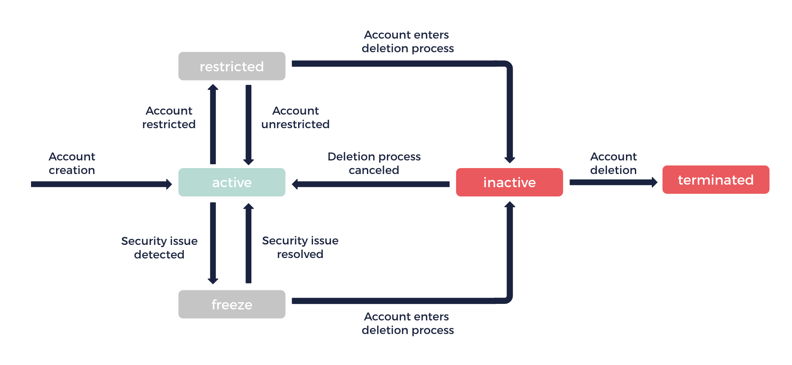

About Your Account
An account enables you to create and manage resources in the OUTSCALE Cloud.
To use your account, different tools are available depending on your needs and preferences. For more information, see Cloud Tools and Advanced Cloud Tools.
General Information
Creation
When you create an account, it is created for a specific Region of the OUTSCALE Cloud. If you want to create and manage resources in other Regions, you must create additional accounts for these Regions. For more information about Regions, see About Regions and Subregions.
|
By default, your account is created for the eu-west-2 Region. If you need assistance with the creation of your account, or if you want to create it for another Region, you can send an email to sales@outscale.com. |
You can also request that your existing account be copied to another Region. To do so, contact your Technical Account Manager, or our Support team at support@outscale.com.
|
When an account is copied, only the personal information of the account is copied, not its resources. However, you can manually export OUTSCALE Machine Images (OMIs) and snapshots from one Region and import them to another Region. For more information, see Copying an OMI Across Regions and Tutorial: Copying a Snapshot to a Different Region. |
Authentication
Your account has several authentication methods depending on the tools used:
-
A password, used mainly for graphical user interfaces (GUIs). For more information, see About Password Protection.
-
Access keys, used mainly for APIs and command line interfaces (CLIs). For more information see About Access Keys.
For more information, see About Authentication.
Resource Quotas and Billing
Quotas for the creation and consumption of resources are defined for your account. A paying account is billed for your consumption. This paying account can be your own account or a different one. For more information about your resource consumption, see Getting Information About Your Account and Quotas and Billing and Consumption.
|
To increase your quotas, you can send a request to our Support team at support@outscale.com. |
Account Lifecycle
An account can go through different states. Depending on the state, some actions may be unavailable.

| State | Description | ||
|---|---|---|---|
|
The default state of an account. In this state, you can use the API and API-based tools to create and manage resources. |
||
|
In this state, you cannot use the API and API-based tools. However, you can still access existing resources over the internet (for example, connecting to your VMs). After 5 days, the state of your account automatically changes to
|
||
|
In this state, the VMs of your account are isolated.
|
||
|
By 20 minutes into this state, all the resources of your account are deleted except for your snapshots, volumes, and default security groups. After 90 days, the state of your account automatically changes to
|
||
|
The state of a deleted account. All storage resources of your account are deleted, without any possibility to recover them. |
Related Pages
Corresponding API Methods